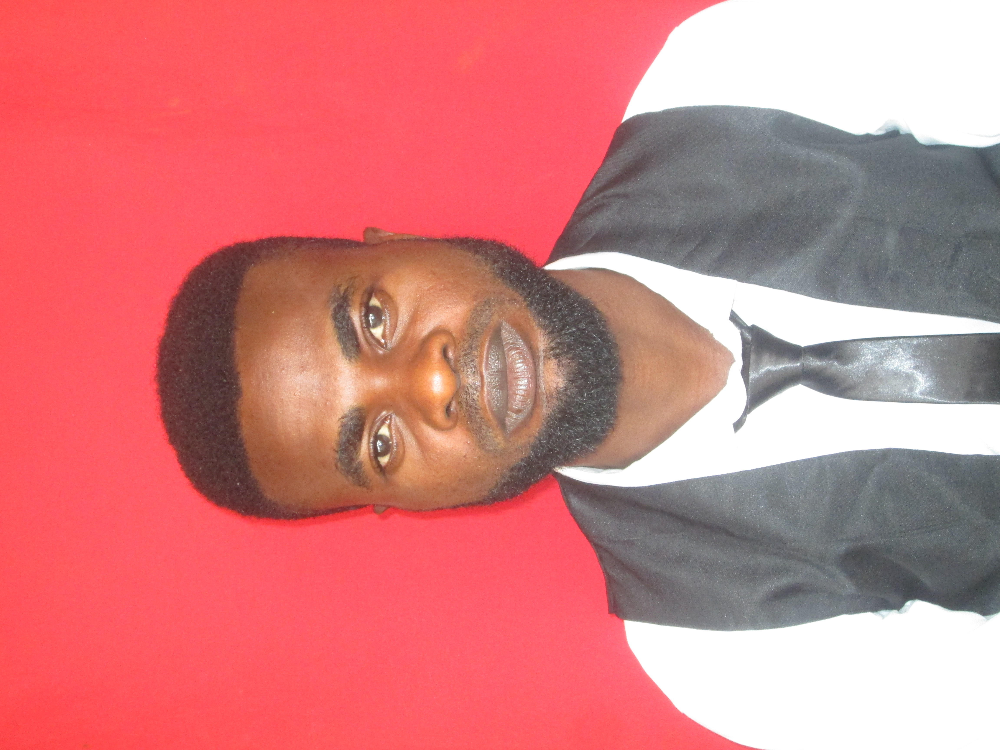

CAREER OBJECTIVE:
- To adavce my horizon through experience based on practical knowledge.
- To work in an intellectually challenging environment, where career advancement is possible.
- Promoting professionalism, efficiency and team work.
STRONG POINTS:
Willingness to face challenges, ability to establish excellent working relationship and insatiable thirst for excellence in any of my life endeavors
ACADEMIC QUALIFICATIONS WITH DATES:
- University of Nigeria, Enugu Campus (LLB)----------------------2020-2024
- University of Nigeria, Nsukka (B.sc)-------------------------------2014-2018
- Colliery Comprehensive Secondary School, Enugu (WASSSE)--2003-2009
- Silas Memorial Primary School, Enugu Ngwo (FSLC)-----------1996-2002
WORKING EXPERINCE:
- G. C Golden LMT
Position Held: Manager-------------------------------- 2016-2017
- Ado Girls Secondary School, Onitsha North
Position Held: Staff--------------------------------------2019-2020
SPECIAL SKILLS AND ABILITY:
- Result Oriented
- Ability to work under pressure
- Ability to work with Minimum supervision
Playing of musical instruments, reading